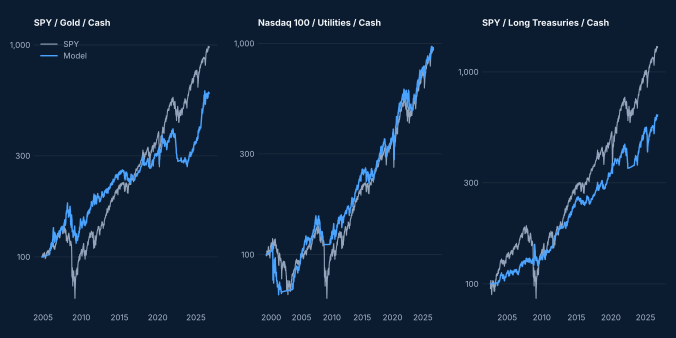

Short version. Only the mix with long Treasuries clearly improves the risk profile (Sharpe 0.60–0.68 against 0.57 for SPY, drawdown −23% to −27% against −55%), at the cost of a lower return. Gold and the Nasdaq 100 / Utilities pair do not beat SPY on return. The monthly review helps in two mixes and hurts in two others, so the difference is more likely noise than a real effect.
Equity curves
Weekly-review version of each mix against SPY, rebased to 100 at the start of each series (logarithmic scale). The three series start on different dates, so they are not comparable with each other.

SPY / Gold / Cash
19 Nov 2004 to 25 Sep 2026, after assumed trading costs, cash at the 13-week T-bill rate.
| Version | CAGR | Sharpe | Max drawdown | Rebalances / year |
|---|---|---|---|---|
| Weekly review, rebalance when far from target | 8.5% | 0.50 | −36% | 3.5 |
| Monthly review, rebalance when far from target | 10.3% | 0.61 | −33% | 1.7 |
| Monthly review, always back to target | 10.1% | 0.59 | −33% | 11.5 |
| SPY buy & holdbenchmark | 11.0% | 0.56 | −55% | — |
Nasdaq 100 / Utilities / Cash
11 Mar 1999 to 25 Sep 2026, after assumed trading costs, cash at the 13-week T-bill rate.
| Version | CAGR | Sharpe | Max drawdown | Rebalances / year |
|---|---|---|---|---|
| Weekly review, rebalance when far from target | 8.5% | 0.44 | −42% | 2.9 |
| Monthly review, rebalance when far from target | 8.0% | 0.41 | −39% | 2.2 |
| Monthly review, always back to target | 8.4% | 0.43 | −36% | 11.6 |
| SPY buy & holdbenchmark | 8.5% | 0.42 | −55% | — |
SPY / Long Treasuries / Cash
31 Jul 2002 to 25 Sep 2026, after assumed trading costs, cash at the 13-week T-bill rate.
| Version | CAGR | Sharpe | Max drawdown | Rebalances / year |
|---|---|---|---|---|
| Weekly review, rebalance when far from target | 7.9% | 0.61 | −26% | 1.7 |
| Monthly review, rebalance when far from target | 8.9% | 0.68 | −23% | 1.0 |
| Monthly review, always back to target | 8.2% | 0.60 | −27% | 11.6 |
| SPY buy & holdbenchmark | 11.3% | 0.57 | −55% | — |
Also compared
The Sectors Allocation portfolio itself (Technology, Energy, Financials), run over the same window as these tests: weekly review 13.3% CAGR and Sharpe 0.63, monthly review 12.1% and 0.57, monthly return to target 12.4% and 0.58, against 8.7% and 0.43 for SPY. The published figures for the model start in January 2000 and differ slightly.
How to read this
Same rule everywhere. Each review looks at the past year and picks the mix of the two assets with the best Sharpe, or holds cash if none is positive. The portfolio changes only when the target is far enough from what it holds; assumed trading costs are 0.10% of each amount traded.
No look-ahead. Every version was rebuilt with the data cut at five different dates; the equity curve up to each date is identical to the one obtained with all the data.
Limits. The assets were chosen after the fact, the histories are short for GLD and TLT, and the differences between weekly and monthly review are small and inconsistent. These are research notes, not recommendations.
Research material only — not personalized financial advice. The portfolios are simulations of the rule described in Sectors Allocation, with assumed trading costs of 0.10% of each amount traded; they are not real accounts. Returns use daily closes with dividends reinvested. Past performance does not predict future results. Contact: domderrico@gmail.com